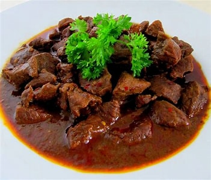

Selamat Datang di,
SeleraKita
Kami adalah tim pencinta masakan yang berbagi hasrat yang sama: menciptakan dan menikmati makanan yang lezat. Kami memiliki pengalaman yang luas dalam memasak dan menjelajahi berbagai jenis masakan dari seluruh dunia. Setiap resep yang kami bagikan telah diuji dan diuji ulang untuk memastikan kelezatan dan keberhasilannya.
-

Nasi Goreng
Nasi goreng adalah makanan berupa nasi yang digoreng dan dicampur dalam minyak goreng, margarin, atau mentega. Biasanya ditambah dengan kecap manis, bawang merah, bawang putih, asam jawa, lada dan bahan lainnya; seperti telur, daging ayam, dan kerupuk.
-

Soto Ayam
Soto ayam adalah makanan khas Indonesia yang berupa sejenis sup ayam dengan kuah yang berwarna kekuningan. Warna kuning ini dikarenakan oleh kunyit yang digunakan sebagai bumbu. Soto ayam banyak ditemukan di daerah- daerah di Indonesia dan Singapura.
-

Rawon
Rawon adalah sebuah hidangan tradisional Indonesia yang terkenal, terutama di daerah Jawa Timur. Hidangan ini merupakan semacam sup berwarna hitam pekat yang memiliki rasa yang khas dan kaya rempah. Bahan utama dari rawon adalah daging sapi, terutama bagian daging sapi yang empuk seperti tengkleng atau iga.
-

Rendang
Rendang adalah hidangan khas Indonesia yang berasal dari Minangkabau, Sumatra Barat. Hidangan ini terkenal karena daging sapi yang dimasak dalam santan kelapa dan rempah-rempah hingga meresap, menciptakan cita rasa yang kaya, pedas, gurih, dan beraroma rempah. Rendang bukan hanya menjadi bagian penting dalam kuliner Indonesia tetapi juga telah mendapatkan pengakuan internasional sebagai salah satumakanan terenak di dunia.
-

Ayam Bumbu Rujak
Ayam bumbu rujak adalah hidangan lezat yang berasal dari Indonesia. Ayam potong dipadu dengan bumbu rujak yang khas, menciptakan kombinasi cita rasa yang unik. Ayam dimasak dalam bumbu ini hingga meresap, emberikan rasa yang kaya dan memuaskan. Tidak hanya memikat lidah orang Indonesia tetapi juga populer di kalangan pecinta kuliner di berbagai belahan dunia.
-

Mie Aceh
Mie Aceh adalah hidangan mie pedas khas Aceh, Indonesia, yang terkenal dengan kekayaan rempah-rempahnya. Keunikan Mie Aceh terletak pada penggunaan bumbu khusus yang disebut "gulai" yang memberikan rasa pedas dan gurih yang khas. Dalam hidangan ini, mie yang direbus dengan sempurna disajikan dengan potongan daging sapi atau kerang, irisan bawang merah, dan ditaburi daun bawang cincang. Mie Aceh menjadi salah satu kuliner favorit di Indonesia.
-

Gulai Kambing
Gulai kambing adalah hidangan khas Indonesia yang terkenal dengan cita rasa lezat dan kaya rempah. Daging kambing yang dipotong-potong dimasak dalam kuah santan yang kental dan diperkaya dengan berbagai rempah yang memberikan gulai kambing karakteristiknya yang kaya dan aromatik yang menjadikan gulai kambing menajdi favorit di berbagai daerah di Indonesia.
-

Rica-rica
Rica-rica adalah hidangan khas Indonesia yang berasal dari daerah Manado, Sulawesi Utara. Rica-rica dikenal dengan kepedasan dan kelezatan rempahnya. Rica-rica umumnya terdiri dari daging ayam, ikan, atau daging lainnya yang dimasak dengan bumbu pedas dan rempah-rempah. Keunikan rasa rica-rica terletak pada kepedasannya yang menyengat dan paduan bumbu rempah yang memberikan sentuhan gurih dan harum. Rica-rica biasanya disajikan bersama nasi putih dan sayuran sebagai pelengkap.